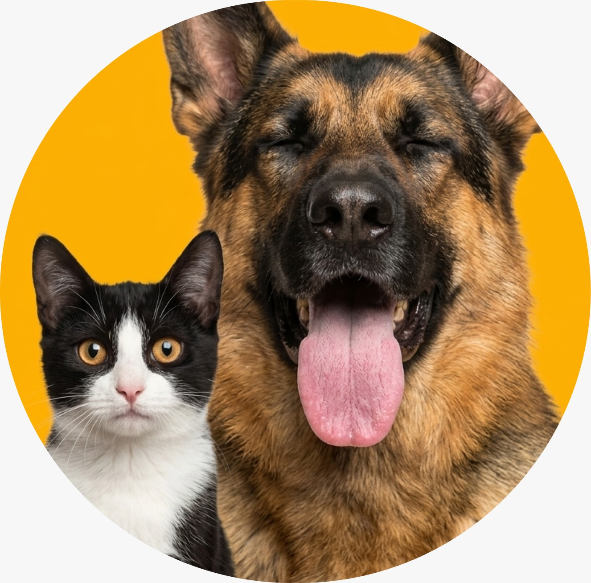

Transforme uma vida,
adote um amigo.
Desde 2015, a Patudos da Rua atua em Joinville resgatando e reabilitando animais para que encontrem o lar que sempre mereceram.
0
Vidas Salvas
0
Adotados este mês
0
Esperando por você
